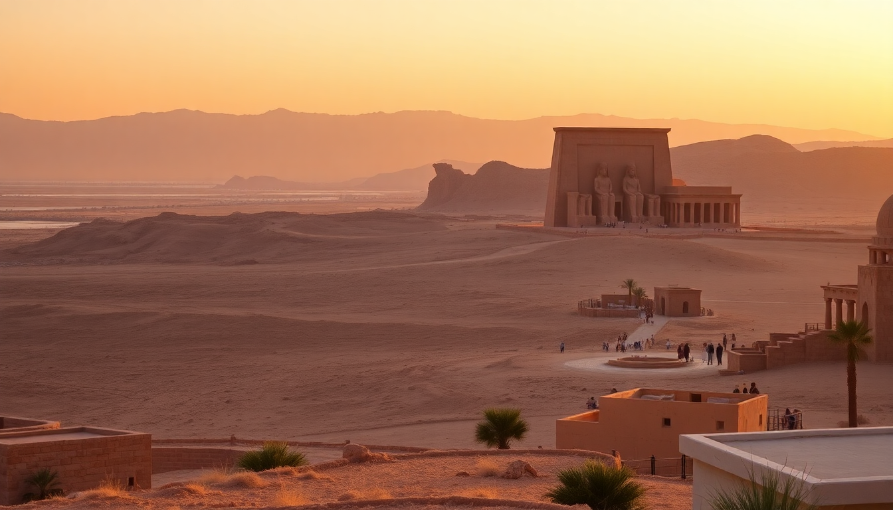

Best Day Trips from Aswan: Abu Simbel, Philae & Nubian Villages

I spent a week based in Aswan last winter, and it turned out to be the right call. The city is compact, the riverside promenade is walkable, and three of Egypt's best day-trip targets — Abu Simbel, Philae Temple, and the Nubian Villages — are all reachable before dinner. Here’s what I’d do again, what I’d skip, and how to avoid the common time-wasters.
Is the Abu Simbel day trip worth the 3-hour drive each way?
Yes, but only if you go with a pre-dawn convoy. Abu Simbel is 280 km south of Aswan, across Lake Nasser. The Egyptian government mandates a police-escorted convoy that leaves Aswan around 4:00 AM. It sounds brutal, but it means you arrive at the site by 7:30 AM, before the heat and the worst of the crowds.
We booked through a local driver arranged by our hotel — the Basma Hotel Aswan — and paid 800 EGP per person (about $16 at the time). The convoy stops once halfway at a rest station with overpriced coffee and clean-ish bathrooms. The temple itself is staggering. The four seated colossi of Ramesses II at the entrance are bigger than any photo suggests. The interior halls are smaller than Karnak, but the preservation is sharper because the entire complex was moved block-by-block in the 1960s to save it from the rising lake.
- Timing tip: The convoy returns to Aswan around 1:00 PM. You get about two hours at the site, which is enough for the main temple and the smaller Hathor temple next door.
- Cost: 200 EGP entry for the main temple (cash only), plus the convoy fee if you’re not on an organized tour.
- What I’d skip: The sound and light show at Abu Simbel. It’s narrated in dramatic Arabic and English, but you sit on concrete benches in the dark, and the mosquitoes are relentless.
- Better alternative if you’re short on time: Skip Abu Simbel entirely and do the Philae Temple visit instead. It’s 20 minutes from central Aswan and gives you that same “temple on an island” feel without the 6-hour round-trip drive.
How do I get to Philae Temple, and is it crowded?
Philae Temple sits on Agilkia Island, a 10-minute motorboat ride from the Philae Temple dock near the old Aswan Dam. You don’t need a tour. Walk to the dock, negotiate with one of the boat captains (standard fare is 150-200 EGP for the boat, round-trip, plus 200 EGP entry to the temple). We paid 180 EGP for the boat and tipped the captain 20 EGP when he waited for us for an hour.
The temple is dedicated to Isis and was also relocated during the dam construction. The reliefs are crisp, and the colonnades are photogenic because the island setting keeps the background clean — no modern buildings or power lines. Crowds peak between 10:00 AM and 12:00 PM, when the cruise ships dock. We went at 8:00 AM and had the inner sanctuary almost to ourselves.
- Boat negotiation tip: Agree on the price before boarding, and clarify that the fare is for the boat, not per person. Some captains will try to quote a per-person rate.
- Nearby stop: After Philae, ask your boat captain to take you past Kitchener's Island (the Botanical Garden). Entry is 50 EGP, and it’s a quiet 20-minute walk through palm trees and imported tropical plants. Not a must-do, but a pleasant cooldown.
- Where we ate afterward: El Masry on the Aswan Corniche. Their stuffed pigeon (hamam) is the best I had in Egypt — 120 EGP for a full plate with rice and salad.
What’s actually worth doing in a Nubian Village visit?
The Nubian Villages on the west bank of the Nile — specifically Gharb Soheil — are half tourist attraction, half real neighborhood. We took a felucca from the Aswan Corniche (250 EGP for a private boat, 45 minutes each way). The ride itself is the highlight: you drift past the Mausoleum of Aga Khan on the east bank and sand dunes on the west.
Once you land, a local guide (usually a kid or a teenager) will offer to show you around for 50-100 EGP. Take them. The village is a maze of painted alleys, and without a guide you’ll just wander past the same three souvenir stalls. The guide will show you the crocodile house (a family keeps live crocs in a courtyard pen — weird but memorable), the local school, and a viewpoint over the Nile.
- The crocodile house: You’ll be invited to hold a baby croc. It’s safe but not for everyone. The owner will ask for a “donation” of 50 EGP after.
- Lunch option: Nubian House Restaurant serves a set meal of grilled fish, rice, and okra stew for 150 EGP. The rooftop terrace has shade and a Nile view.
- What I’d skip: The henna tattoo stalls. They use black henna, which can cause skin reactions, and the prices triple once they see a tourist.
- Time budget: Plan for 2.5 hours total — 1.5 hours for the felucca ride, 1 hour in the village. Don’t stay longer; there isn’t much else to do.
Can I combine Philae Temple and the Nubian Village in one day?
Yes, easily. They’re on the same stretch of the Nile — Philae is south of the dam, Gharb Soheil is north of it. We did both in one day without rushing. Start at Philae at 8:00 AM (finish by 10:00 AM), then take the same boat back to the dock and hire a felucca from the Corniche for the Nubian Village at 11:00 AM. You’ll be back at your hotel by 2:00 PM with time for lunch.
- Logistics: Don’t try to do Abu Simbel and Philae on the same day. The convoy schedule doesn’t line up, and you’ll be exhausted.
- Hotel recommendation: We stayed at Mövenpick Resort Aswan on Elephantine Island. It’s a 5-minute free ferry from the Corniche, and the island location keeps it quiet. Rooms from $90/night. The ferry runs every 15 minutes until midnight.
What’s the best way to get around Aswan for these trips?
For Abu Simbel, you need a car with a driver or an organized tour. For everything else, walk or take a tuk-tuk. The Corniche is 3 km long, and most hotels, restaurants, and the Philae dock are within walking distance of each other. Tuk-tuks cost 10-20 EGP for a short ride; agree on the price before you get in.
- For the Abu Simbel drive: Our driver was Ahmed (contacted through the Basma Hotel front desk). He charged 1,200 EGP for the whole day, including the convoy fee. That covered two people. The car was a clean 2019 Hyundai with working AC.
- eSIM note: I used Airalo for data (5 GB, $12). It worked fine in Aswan and at Abu Simbel. No signal on the road between Aswan and Abu Simbel for about 45 minutes.
- ATM warning: Most boat captains and tuk-tuk drivers take cash only. There are ATMs at the Nile Ritz Hotel on the Corniche and inside the Aswan Souq.
FAQ
Is it safe to travel from Aswan to Abu Simbel independently? Yes, but only within the police convoy. The road is flat, straight, and patrolled. Solo driving without the convoy is illegal — the police will stop you at checkpoints. Book through your hotel or a licensed operator. The convoy leaves daily at 4:00 AM from the Aswan Security Directorate near the train station.
How much time do I need for the Philae Temple visit? Two hours total — 30 minutes for the boat ride (round-trip), 90 minutes inside the temple. If you add Kitchener’s Island, budget an extra 45 minutes. The temple itself is compact; you don’t need a guide unless you want detailed hieroglyphic explanations.
What should I wear for these day trips? Lightweight, long pants or a long skirt, and a sun hat. The temple sites have little shade. For the Nubian Village, the alleys are narrow and dusty — closed-toe shoes are better than sandals. Bring a scarf for the felucca ride; the sun reflects off the water and burns fast.
Conclusion
- Abu Simbel is a full-day commitment (4:00 AM to 1:00 PM) but worth it for the scale alone. Book through your hotel, not a street tout.
- Philae Temple is the best half-day trip from Aswan: cheap, easy, and impressive. Go early to beat the cruise ship crowds.
- Nubian Village is a pleasant felucca ride with a mildly touristy destination. The crocodile house is weird but memorable; skip the henna.
- Combine Philae and the Nubian Village in one day. Don’t try to add Abu Simbel to the same itinerary.
- Carry cash in small denominations (10, 20, 50 EGP). Most boat captains and tuk-tuk drivers don’t have change for 200 EGP notes.